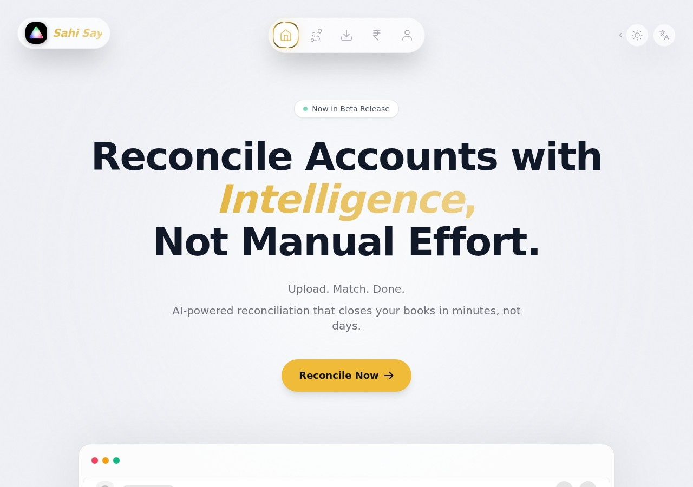

Structured intake
Validated forms, document collection and routing based on the request type or customer.
Workflow automation and internal portals
For teams that re-enter the same information, chase approvals or assemble status reports manually across email, spreadsheets and chat.
What can be built
The objective is not to replace every existing system. It is to remove the most expensive gaps between them.
Validated forms, document collection and routing based on the request type or customer.
Role-based queues, decisions, reminders and an audit trail visible to the right people.
Live status views and exports generated from the workflow rather than reconstructed afterward.
Bounded initial pilot
A request enters with required data and files.
Rules assign ownership, deadlines and approval steps.
Status, documents and reports remain in one traceable record.
Interview the process owner and two to four representative users.
Validate screens, roles and exceptions before production work.
Run the workflow with a controlled user group and real cases.
Compare time, errors and follow-up effort against the baseline.
Relevant product evidence
SahiSay demonstrates browser-based processing, a focused operational interface and a privacy-conscious architecture.

Bank reconciliation for Indian accounting workflows, using a Rust and WebAssembly matching engine that operates in the browser.
Typical engagement
| Discovery and workflow specification | Process map, risks, user roles and pilot plan | INR 30,000-60,000 |
| Bounded pilot | One operational workflow with defined users | INR 100,000-300,000 |
| Production expansion | Integrations, permissions, migration and support | Quoted after pilot |
Indicative planning ranges only. Complexity depends primarily on integrations, exceptions, data quality and access-control requirements.
Useful first message
Send the forms, spreadsheets or screenshots involved and describe where work typically stalls.